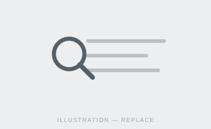
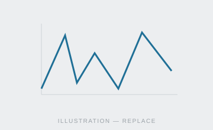
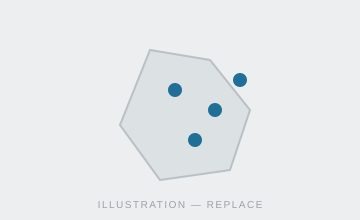
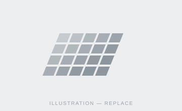
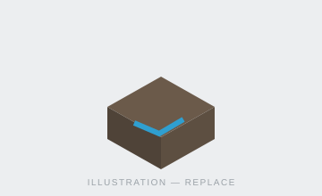
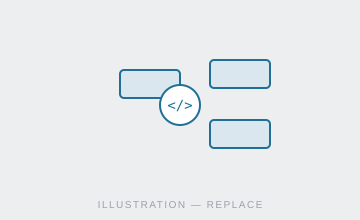

A searchable catalogue of FDRI datasets — filter by metadata or location to find exactly the data you need.
Catalogue Search

Plot and compare environmental measurements over time, from live sensor readings to historic records.
Time Series Data Explorer

Map where environmental monitoring happens — turn data layers on and off across the FDRI catchments.
Spatial Explorer

Notebooks for visualising gridded datasets, with links to the relevant GitHub repositories.
Gridded Data Service

Notebooks for visualising LiDAR datasets, with links to the relevant GitHub repositories.
LiDAR Data Service

Browse the FDRI code repositories behind the platform's tools and notebooks.
GitHub Repos